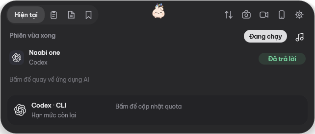

Phiên AI trong tầm mắt
Xem Codex đang chạy hay đã trả lời. Nhấn một phiên để quay lại nơi bạn đang làm việc.
WINDOWS 10 / 11 · X64
Theo dõi phiên AI, tìm lại những gì đã sao chép và điều khiển nhạc từ một dock nổi. Naabi cũng có một bạn pet đi dạo cùng bạn.
1.0.0 · Bộ cài chưa ký số · Có kiểm tra cập nhật tự động

Xem Codex đang chạy hay đã trả lời. Nhấn một phiên để quay lại nơi bạn đang làm việc.
Cuộn lịch sử clipboard, ghim mục hay dùng và mở ghi chú hoặc dấu trang ngay từ dock.
Điều khiển nhạc và xem lời đồng bộ khi có dữ liệu.
Xem ghi chú phát hành để biết những thay đổi trong phiên bản này.